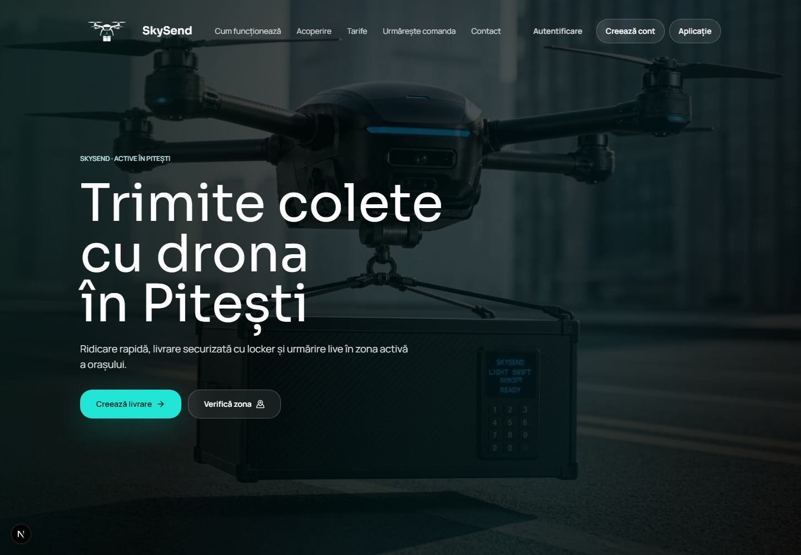
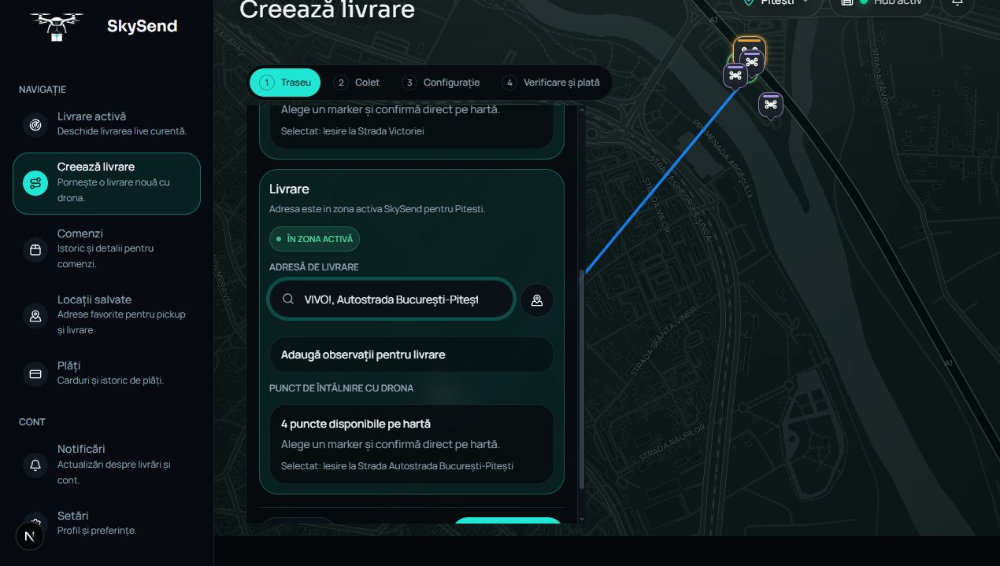
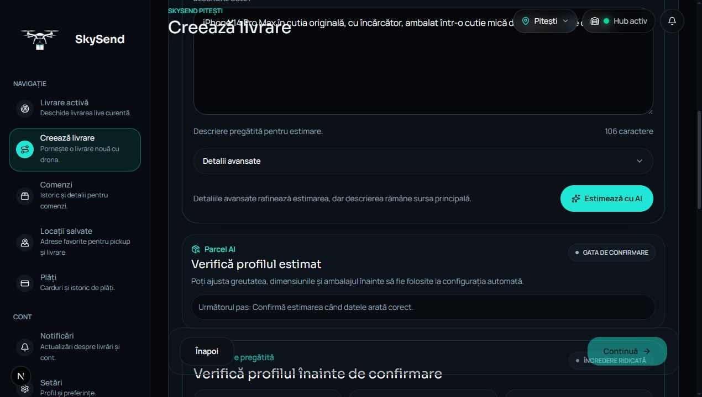
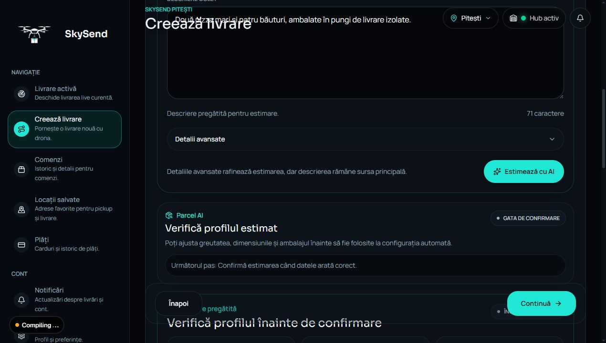
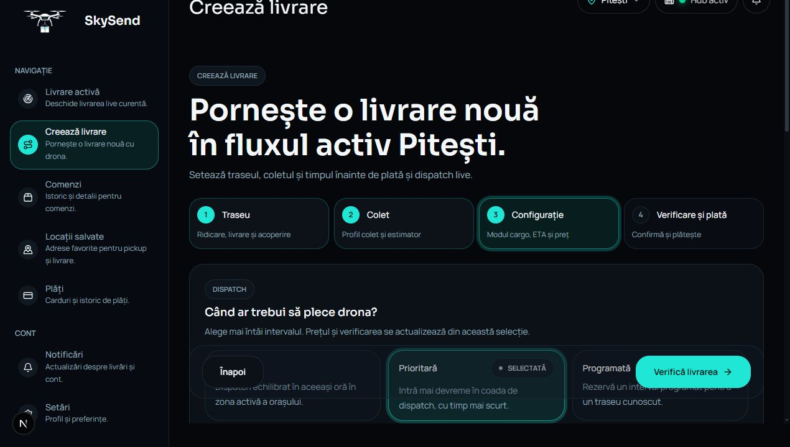
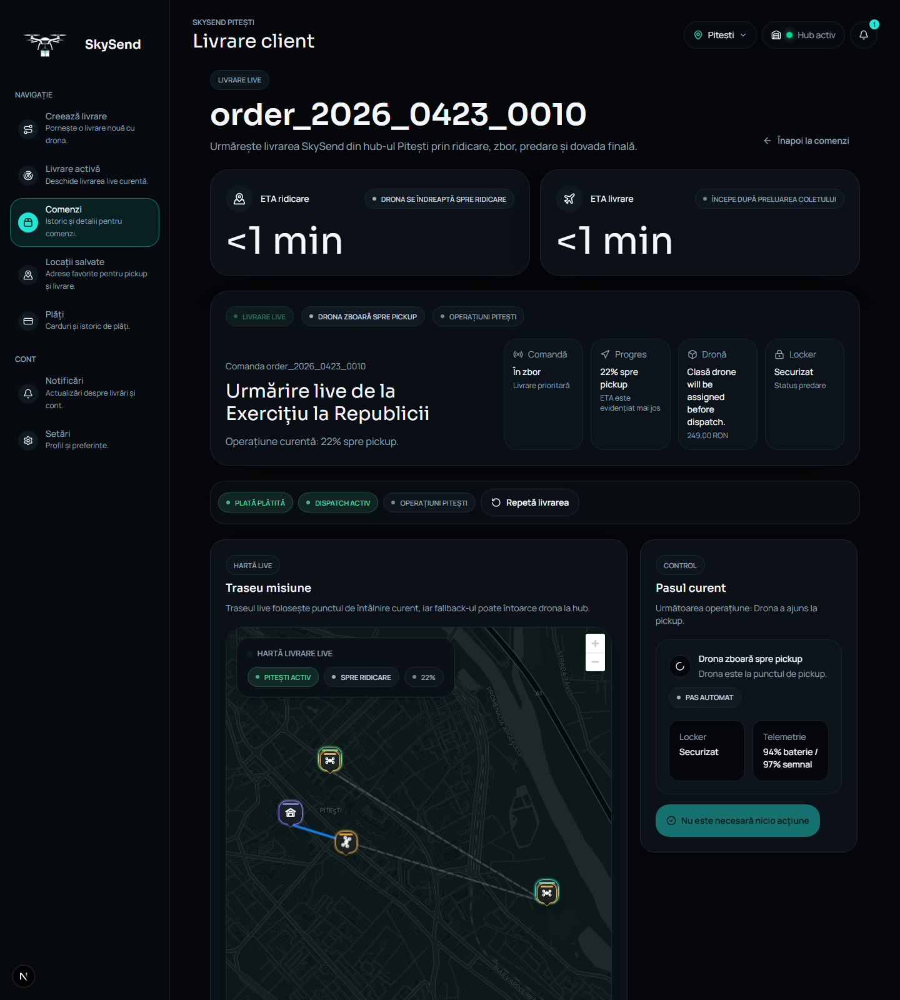
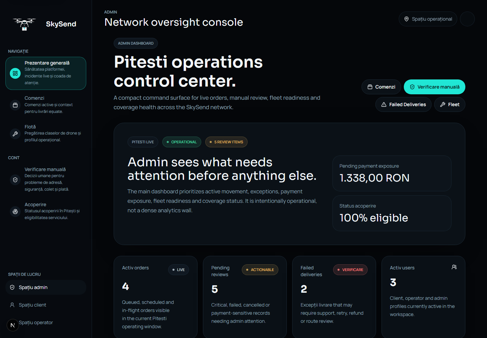
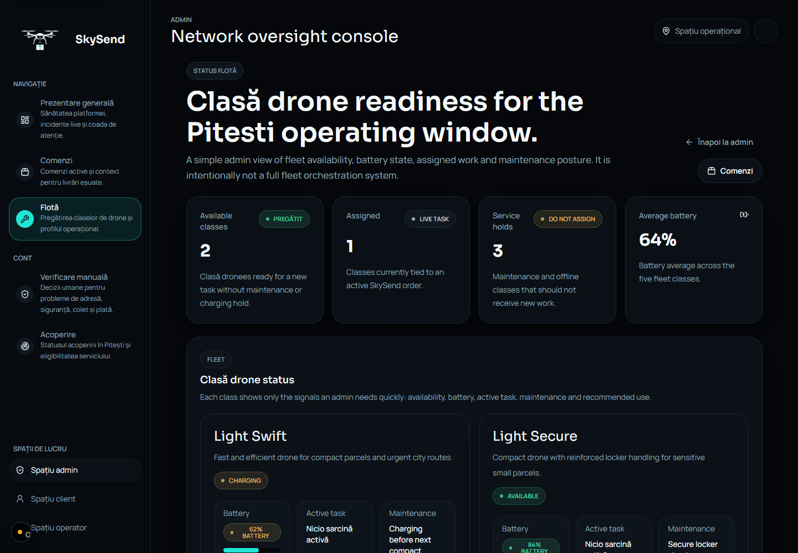

INFOEDUCATIE
Skysend
Platforma web pentru livrari urbane cu drone, Parcel AI si Mission Control operational.

Problema
Last-mile urban este lent si greu de controlat
- trafic si intarzieri pentru colete mici;
- costuri ridicate pentru livrari scurte;
- emisii produse de vehicule supradimensionate;
- predare dificila in zone aglomerate.
- verificare coverage;
- puncte sigure de handoff;
- estimare tehnica a coletului;
- monitorizare clara a misiunii.
Solutia
Skysend combina harta, AI si configurare automata
Utilizatorul alege pickup/dropoff si descrie coletul. Sistemul verifica ruta, estimeaza coletul si alege automat platforma de drona.

Flow utilizator
De la adresa la misiune live
- Pickup si dropoff sunt introduse si verificate in coverage.
- Harta propune puncte de handoff recomandate sau alternative.
- Utilizatorul descrie coletul in limbaj natural.
- Parcel AI genereaza profilul tehnic si intrebarile utile.
- Profilul este confirmat, apoi configuratia este aleasa automat.
- Order summary afiseaza ETA, pret si configuratie.
- Misiunea poate fi urmarita in simularea live.
Parcel AI Intelligence
Descriere naturala transformata in profil tehnic

Exemplu electronics
„iPhone 14 Pro Max in cutia originala, cu incarcator, ambalat intr-o cutie mica de carton cu folie cu bule.”
- categorie detectata: electronics;
- dimensiuni si greutate estimate;
- fragilitate moderata;
- ambalaj in cutie;
- profil confirmabil inainte de comanda.
Parcel AI Food
Food si colete sensibile la temperatura

Exemplu food
„Doua pizza mari si patru bauturi, ambalate in pungi de livrare izolate.”
- categorie detectata: food;
- ambalaj izolat;
- sensibilitate termica marcata;
- recomandare catre NOVA Thermal Large in captura.
Configurare automata
Engine-ul alege platforma si cargo module-ul
| Platforma | Module | Scop |
|---|---|---|
| AER | AER Express, AER Secure | colete mici, rapide, urbane, sensibile |
| NOVA | NOVA Thermal Medium, NOVA Thermal Large, NOVA Cargo | food, retail, colete standard si business |
| ORIGIN | ORIGIN Bulk, ORIGIN Secure+ | payload mai mare si operatiuni speciale |


Limite reale
Configuratia este filtrata dupa date masurabile
| Modul | Limite | Exemplu |
|---|---|---|
| AER Secure | 1.6 kg, 24 x 20 x 12 cm, 5 L | electronice mici si sensibile |
| NOVA Cargo | 2.5 kg, 34 x 25 x 16 cm, 11 L | retail standard incadrat in limite |
| ORIGIN Bulk | 8 kg, 55 x 42 x 30 cm, 55 L | colet mare de retail, aproximativ 4 kg |
| ORIGIN Secure+ | 12 kg, 70 x 50 x 36 cm, 85 L | colete mari, fragile sau high-value |
Landing / Handoff Points
Drona preda prin puncte sigure, nu oriunde
- punct recomandat;
- alternativa;
- indisponibil;
- review daca riscul trebuie verificat.
Live Delivery Simulation
Misiunea are statusuri, ETA si telemetry

- preflight checks;
- en route to pickup;
- locker descending pickup;
- parcel secured;
- en route to dropoff;
- PIN si confirmare destinatar;
- delivery completed sau fallback.
Admin Mission Control
Control operational pentru comenzi si flota

- comenzi active si review;
- failed deliveries;
- fleet readiness;
- alerting operational;
- manual review pentru situatii speciale;
- date si indicatori pentru operator.
Fleet
Flota are disponibilitate si roluri recomandate

Pagina de flota prezinta disponibilitate, baterie, task activ, mentenanta si utilizarea recomandata. Este o baza pentru un sistem real de fleet management.
Weather & Safety
Exista reguli de siguranta, iar vremea reala ramane viitor
- sensibilitate la ploaie, vant, caldura, frig, umiditate;
- tag-uri de configuratie weather resilient;
- safety checks inainte de coborarea locker-ului;
- alerting operational in dashboard demo.
- weather API real;
- decizii pe vant si vizibilitate live;
- restrictii aeriene operationale live;
- telemetry hardware real.
Tehnologii
Stack modern, orientat pe produs
| Frontend | Next.js, React, TypeScript, Tailwind CSS |
| Harti | MapLibre GL, Geoapify, candidate handoff points |
| Auth si plati | Clerk, Stripe / plati simulate in demo |
| AI | OpenRouter optional, fallback determinist local |
| Simulare | state machine custom, telemetry si statusuri |
| Date si servicii | localStorage/mock data in demo, Supabase si Resend pregatite |
Dificultati si viitor
Ce face proiectul diferit
- harta si coverage urban;
- puncte candidate de handoff;
- estimare AI a coletului;
- configurare automata pe limite fizice;
- simulare live cu state machine;
- admin separat de flow-ul clientului.
- weather API real;
- fleet management cu drone reale;
- optimizare automata de rute;
- extindere in alte orase;
- integrare completa de persistenta si analytics.